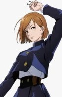

Selecione um personagem
- 
Aoi Todo
Aoi prefere o combate corpo-a-corpo a qualquer outra coisa, normalmente contando com a força bruta para dominar seus oponentes ao invés de Jujutsu.
Aoi prefere o combate corpo-a-corpo a qualquer outra coisa, normalmente contando com a força bruta para dominar seus oponentes ao invés de Jujutsu.